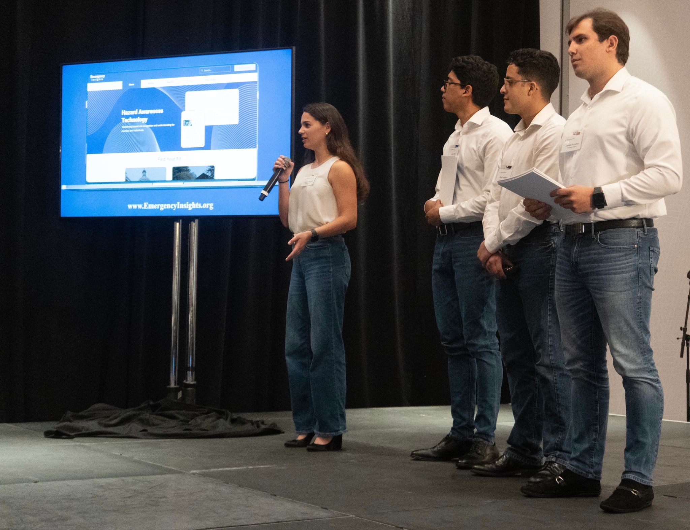

Emergency Insights
Developer · GIS / Natural Disaster Hazard Platform

Project Overview
Emergency Insights is a platform developed to allow future homeowners and property managers to access comprehensive information about potential natural disaster hazards specific to their property. The platform leverages Geographic Information Systems (GIS) data to provide location-specific risk assessments across multiple hazard types.
Motivation
Property buyers and managers often lack accessible, consolidated information about the natural disaster risks associated with a specific location. Emergency Insights addresses this gap by aggregating publicly available GIS data and presenting it in an intuitive interface that empowers property decisions with spatial risk context.
Key Features
- Location-specific natural disaster hazard assessment for any property address
- Multi-hazard coverage — floods, hurricanes, wildfires, and other regional risks
- GIS-powered spatial analysis for accurate geographic risk mapping
- User-friendly interface for non-technical property buyers and managers
- Data sourced from authoritative government GIS repositories
Technical Implementation
- Python — backend data processing and GIS analysis
- GIS data integration — parsing and querying spatial datasets
- Geocoding — address-to-coordinate translation for property lookup
- Hazard overlay analysis — spatial intersection of property boundaries with risk zones